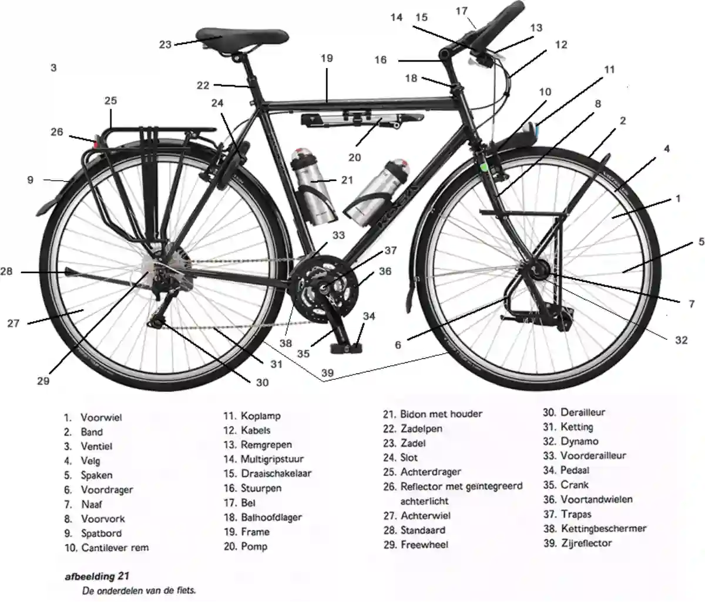

Jij en je vrienden nemen de fiets voor een epische roadtrip! Het masterplan? Vertrekken in België, knallen richting Frankrijk, en in Calais de ferry op om er na te fietsen naar de krijtrotsen in Engeland. Klinkt als de ultieme vrijheid, toch? 🚢💨
Maar er is één massive probleem... jullie fietsen zijn niet bepaald 'Tour de France'-proof. Onderweg vliegen de kettingen eraf, rammelen de spatborden en sta je wekelijks met een lekke band. 🤦♂️ Om de boel te fixen bij lokale fietsenmakers, móét je je fietsonderdelen kennen... in drie talen!
Weet je een onderdeel niet? Geen stress! Je kan tijdens de tocht altijd op het Spiekbriefje 🚲 klikken om het op te zoeken. Je hebt 30 minuten de tijd voor de hele tocht.
De Route:
Goed bezig!
Je bent veilig aangekomen!
Score
0/0
Neem nu een printscreen van dit scherm (met je score) en voeg dit toe aan je bestand in Google Classroom.